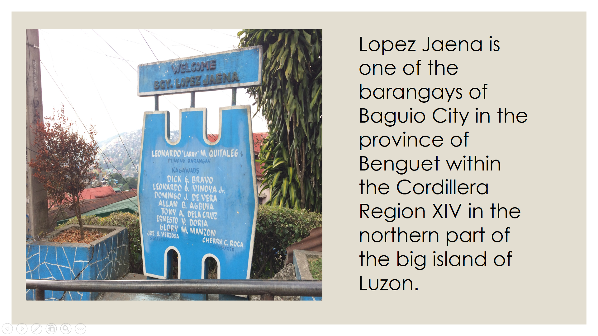
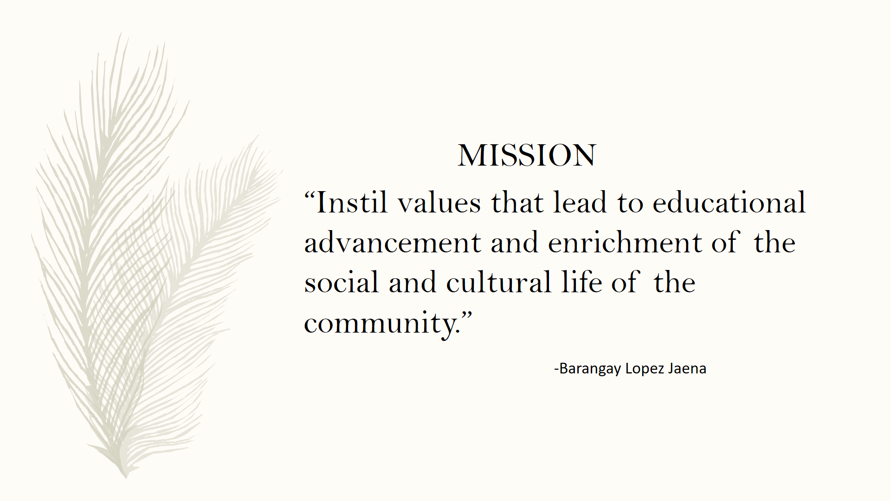
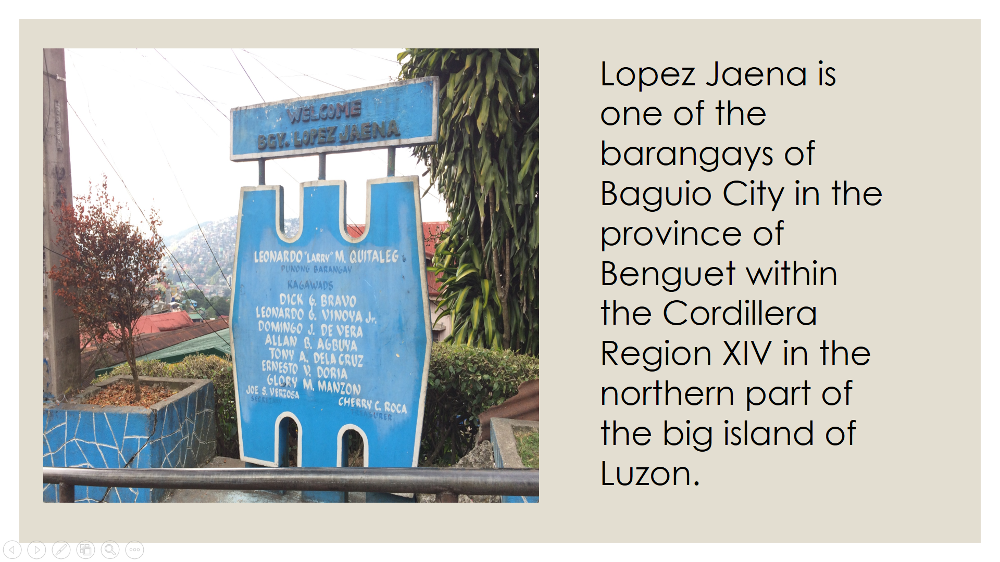
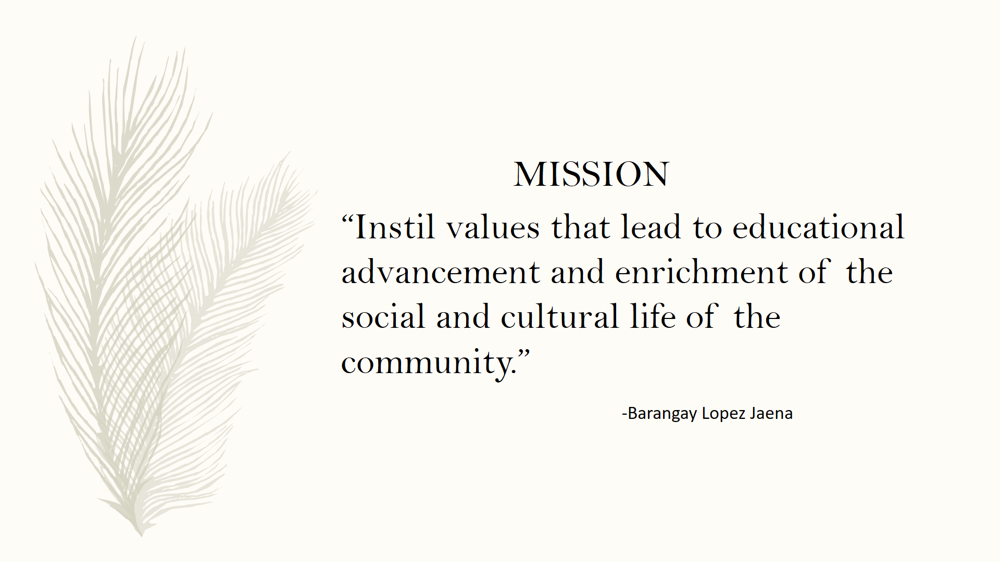
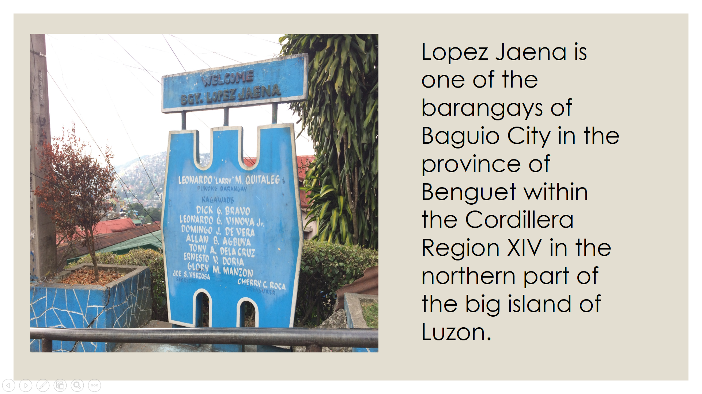
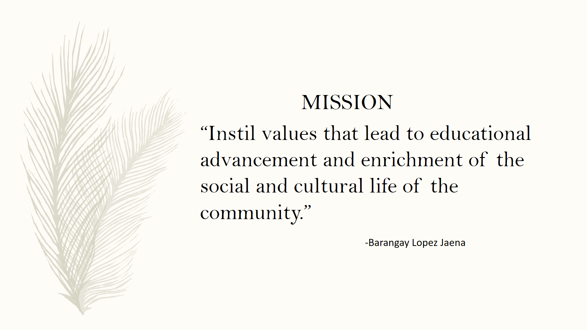
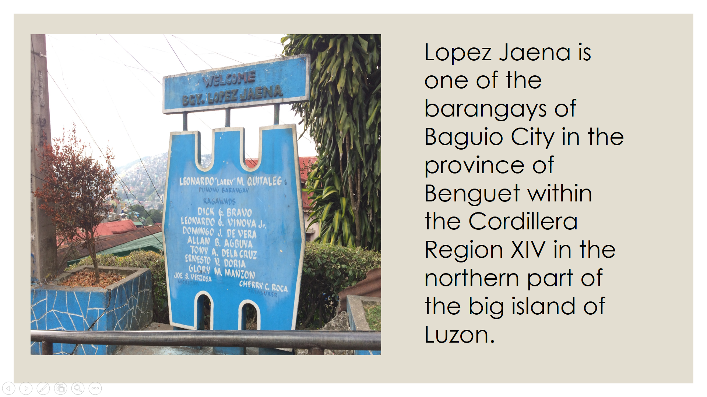
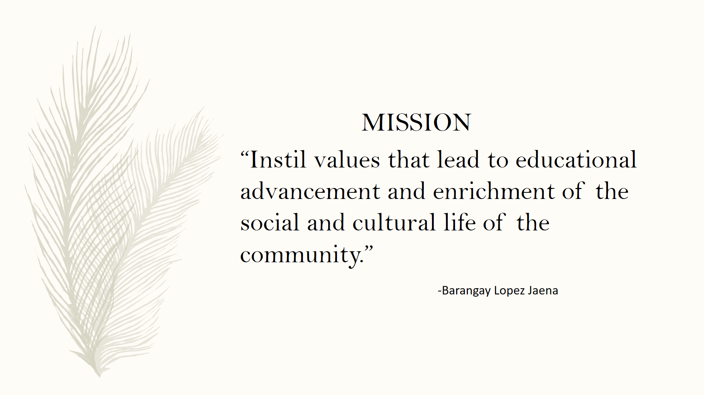

 



| PROGRAM/PROJECT/ACTIVITIES | OBJECTIVE |
|---|---|
| Removing litter from the public areas of the barangay, and even in the respective houses of the residents. | The objectives of the clean-up drive are the following: - To ensure a safe, clean, and healthy environment. - To promote environmental awareness - To eradicate diseases thay a dirty environment may bring to the community - To engange the residents of Barangay Lopez Jaena in long term environmental initiatives. |
| Clearing illegal waste dumps that are usually heaped at street corners. | |
| Placing trash cans around the barangay. |
| PROGRAM/PROJECT/ACTIVITIES | OBJECTIVE |
|---|---|
| Owners will be required to have a leash for their dogs | As per REPUBLIC ACT No. 9482 anyone who violates this ordinance will be fined 5OO PHP per violation. This action plan aims to reduce the waste caused by the dogs in the barangay. |
| Potty Pads for all dog owners | |
| PROGRAM/PROJECT/ACTIVITIES | OBJECTIVE |
|---|---|
| Seminar | Sec. 5. Responsibilities of Pet Owner. - All Pet Owners shall be required to: (a) Have their Dog regularly vaccinated against Rabies and maintain a registration card which shall contain all vaccinations conducted on their Dog, for accurate record purposes. (b) Submit their Dogs for mandatory registration. (c) Maintain control over their Dog and not allow it to roam the streets or any Public Place without a leash. (d) Be a responsible Owner by providing their Dog with proper grooming, adequate food and clean shelter. (e) Within twenty-four (24) hours, report immediately any Dog biting incident to the Concerned Officials for investigation or for any appropriate action and place such Dog under observation by a government or private veterinarian. (f) Assist the Dog bite victim immediately and shoulder the medical expenses incurred and other incidental expenses relative to the victim’s injuries. |
| PROGRAM/PROJECT/ACTIVITIES | OBJECTIVE |
|---|---|
| Recycing Bins will be placed around the barangay | Since waste is a growing problem in the Barangay, educating the community on ways how to reduce their wastes will be a big help. The barangay will place a "recycling bin/zone"where residents of the barangay can drop, plastic bottles, papers, boxes or any other recyclables. These recyclables can then be brought to a recycling center for them to be repurposed. Residents will also be advised to ditch the plastic bags and start using eco bags instead. Residents can also start composting, usually a large amount of what we throw in the trash could be composted. With just a bin and a small space, you are good to go. |
| Eco bags over plastic bags | |
| Start compost pits |